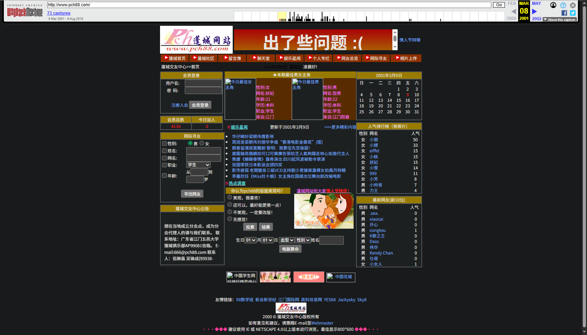
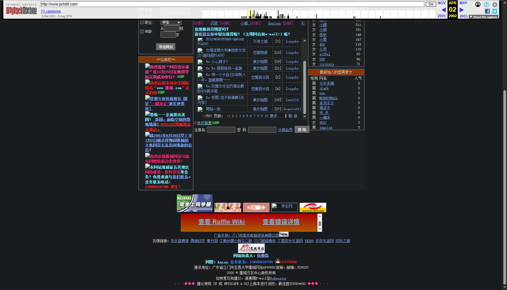

"PCH88.com，蓬城网站，在一个没有QQ，没有微信，还是靠写信联系的年份，一群热友于2000年创办的网络交友平台，这比腾讯早了多少年啊"，感谢儿子今天重新注册了当年这两个网站，并透过时光机找到当时的一些页面，26年前的回忆，4000多人的交友网站，江门七校的学生平台，如果坚持下来，会是怎么样的境况呢？夕日一起奋斗的你们，现在都在何方呢？是否同我一样，偶尔都会想起那段辉煌而又记忆的大学时光！
时光印记
Digital Archaeology
以下截图来自 Internet Archive 的 Wayback Machine——互联网的"时光机"。对于中国大陆的访客而言，这些存档尤为珍贵，因为 Wayback Machine 本身无法直接访问。我们将这些截图以"数字考古文物"的形式呈现——不是复原，而是致敬。

🔍 点击放大2001 年 3 月 8 日
这是 Wayback Machine 保存的最早的蓬城交友中心快照。此时网站正处于黄金时代——
- 会员总数：4,139 人
- 最佳女主角：妖妃
- 最佳男主角：型男
- 人气榜：小丽(50)
- 友情链接：98数学班

🔍 点击放大2002 年 4 月 2 日
一年后的蓬城网站。页面结构保持稳定，内容持续更新。此时的中国互联网正在经历第一波泡沫后的复苏——
- QQ 注册用户突破 1 亿
- 中国网民约 4,580 万
- 博客概念刚刚传入中国
原始网站素材
以下是从 Wayback Machine 存档中提取的原始图片——它们是那个时代的像素见证。
Logo · 208×80px
情人节特辑横幅

装饰元素

装饰元素